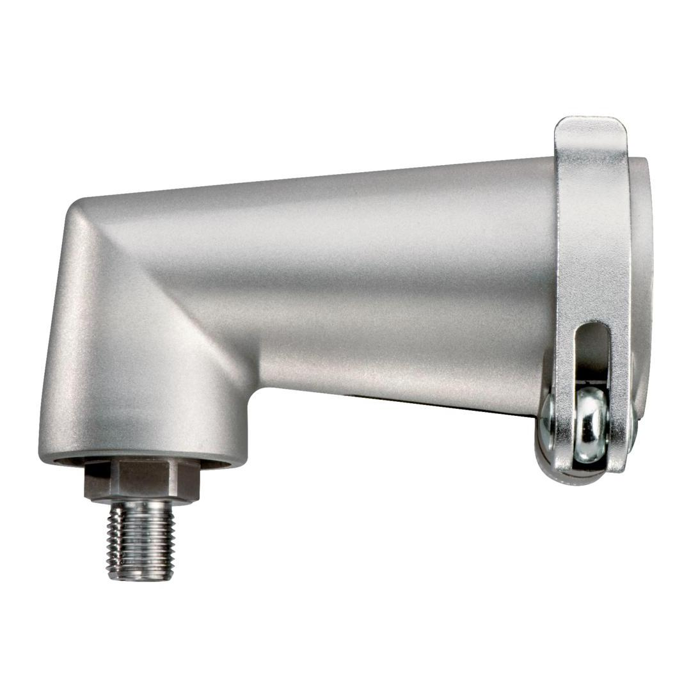

<h1>METABO | ANGLE ATTACHMENT</h1><p>631078000</p><div style="text-align: left;"></div><div style="display:flex;flex-wrap:wrap;gap:8px"></div><h4>Technical Details</h4><table><caption>KEY FIGURES</caption><tbody><tr><td>Aperture</td><td>43 mm</td></tr><tr><td>Spindle thread</td><td>1/2 " - 20 UNF </td></tr><tr><td>Spindle with hexagonal recess</td><td>1/4" (6.35 mm) </td></tr><tr><td>Weight</td><td>0.5 kg / 1.1 lbs </td></tr></tbody></table>